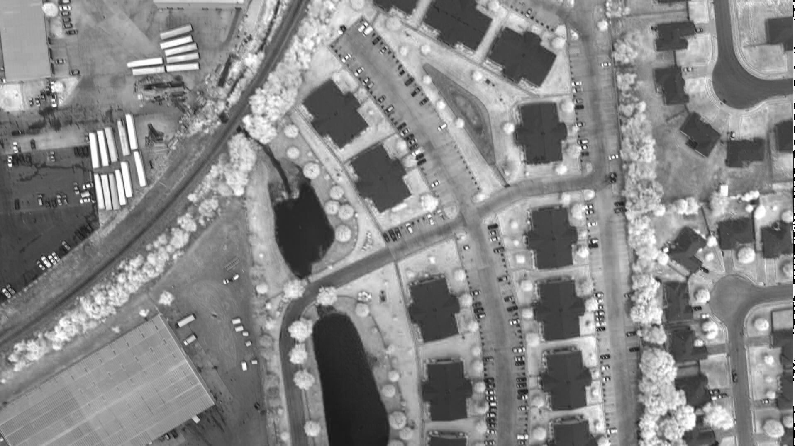

Rasdaman クイックスタート¶
Rasdamanは、多次元の時空間センサー、画像、シミュレーション、統計データに関する柔軟なアドホック分析のためのビッグデータエンジンです。Web Coverage Processing Service(WCPS)クエリ言語は、オープン地理空間コンソーシアム(OGC)標準で、Webサービスを使用して、センサー、シミュレーション、画像、統計データなどの多次元ラスタカバレッジのフィルタリングと処理を可能にします。WCPSクエリは、rasdamanクエリ言語であるrasqlに変換され、rasdaman上で実行されます。このクイックスタートでは、WCPS言語を使用してサンプルの2Dカバレッジにアクセスし、操作する方法を説明します。
Contents
セットアップ¶
次のクエリを実行する前に、まずrasdamanとTomcatを起動します。デスクトップで Databases ディレクトリを開き、 Rasdaman Server を起動します。rasdamanが起動するまで、特にTomcatが完全に起動するまで(rasdaman ウェブクライアント がブラウザにロードされるまで)、2分から3分間待ちます。
その後、同じディレクトリから Rasdaman-Earthlookデモ を開くことができます。これにより、ブラウザでローカルのデモが起動します。より実践的なチュートリアルを行なうので、次の例に進んでください。
WCPSクエリを実行¶
- 次のいずれか：
- rasdamanウェブクライアント に行って ProcessCoverages タブに切り替え、クエリボックスにクエリを入力して送信を押してください。
- クエリーを次のURLに追加し、ブラウザーを使って実行します: http://localhost:8080/rasdaman/ows?query=your_query

フル・カバレッジへのアクセス¶
すべてのカバレッジにアクセスするためのWCPSクエリは次のとおりです。
for c in (NIR) return encode(c, "png")
カバレッジリクエスト をクリックしてブラウザで実行してください。
カバレッジのサブセットを選択します。¶
カバレッジのサブセットにアクセスするためのWCPSクエリは次のとおりです：
for c in (NIR) return encode(c[i(0:500),j(0:500)], "png")
ブラウザで実行するには、 サブセットリクエスト をクリックします。
クエリー結果は次のようなイメージです:

カバレッジからのバンド抽出¶
カバレッジの赤色帯域にアクセスするためのWCPSクエリは次のとおりです:
for c in (NIR) return encode(c.red, "png")
バンド抽出 をクリックして、実行します。その結果、つぎのような画像が表示されます：
{kind=link}
算術演算:カバレッジのNDVIの抽出¶
NDVI(Normalized Difference Vegetation Index)はリモートセンシングにおける植生の確率の尺度です。カバレッジからNDVIを導出するためのWCPSクエリは次のとおりです。
for c in ( NIR ) return
encode(
(unsigned char) (
(((float)c.0 - (float)c.1) /
((float)c.0 + (float)c.1)) > 0
) * 255
, "png" )

次のステップ¶
- rasdamanや rasql そして、OGC Webサービスサポートの背景にある概念を要約して rasdaman チュートリアル で紹介しています。
- OGC Web Coverage Processing Service 言語標準 (rasdamanに影響されて制定された)について、学んでください。 ドキュメントとチュートリアルのページ そして、 WCPS Query SandBox が良い出発点になるでしょう。
- カバレッジデータおよびサービス全般に興味がありますか? OGCの Coverages Domain Working Group wiki を参照してみましょう。
- rasdaman 文書 にアクセスできる方は、 rasdaman の管理、その問い合わせ言語、データの取り込み方法も学べます。
- インタラクティブな1-Dから4-Dのrasdamanのデモを見るには、 多次元デモ をご覧ください。OSGeoLive に含まれているのは小さい例です。 OGC標準ショーケースサイト では、(ドライブ容量をこえるような)大きなデータセットを使っている例を見ることができます。